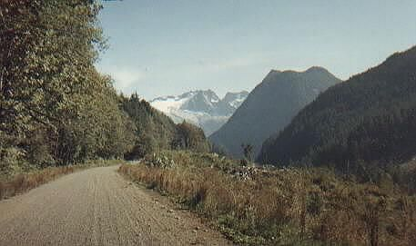
The Cascade River Road ends here, and the trail climbs about to Sahale Glacier. The photo is from higher up the Cascade Pass Trail, where the trail runs through alpine meadow.
Photo: Robert Ashworth from Bellingham, WA., USA · CC BY 2.0 · Wikimedia Commons
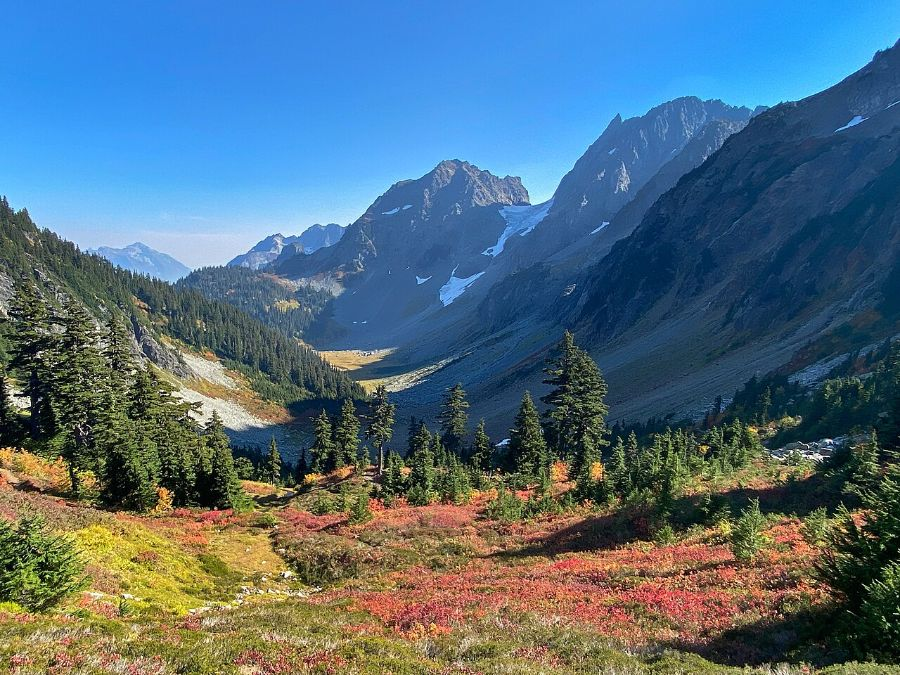
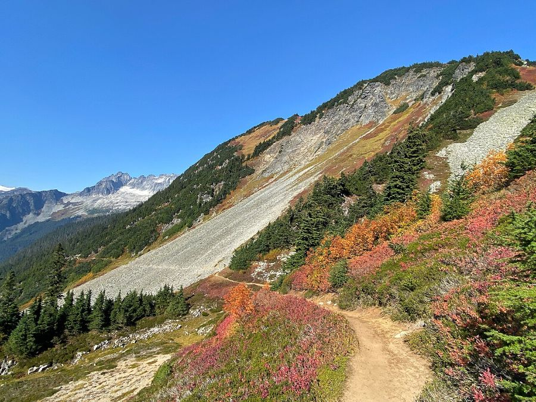
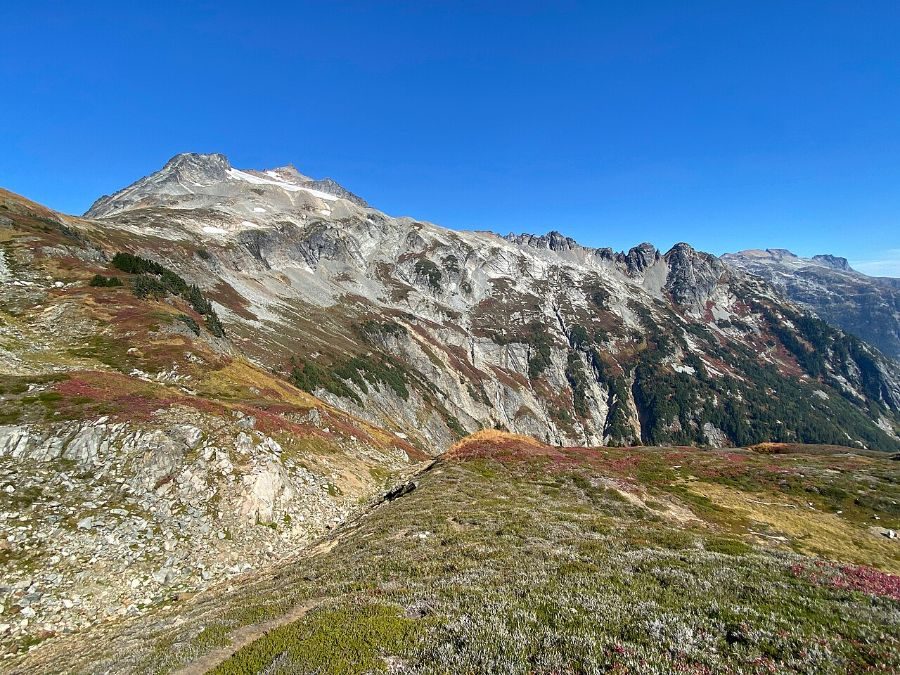
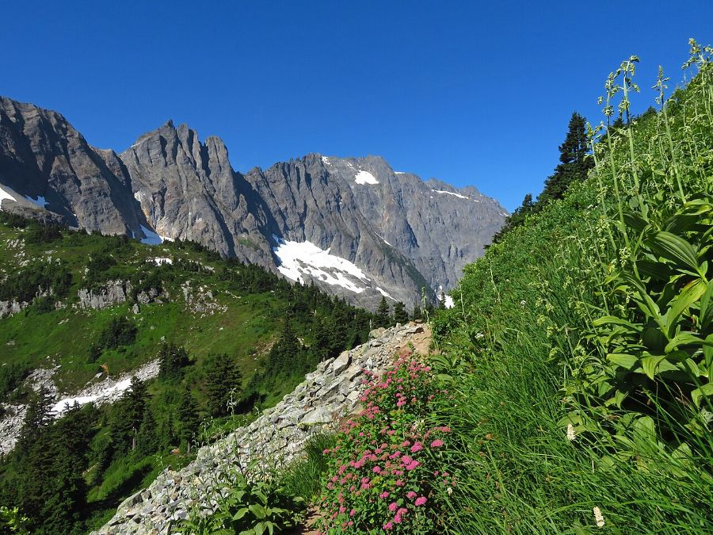
Past the pass the trail follows Sahale Arm, with the Triplets across the valley. The flowers are over and the meadows are turning.
Photo: Jeff Hollett from Vancouver, WA, USA · Public domain · Wikimedia Commons
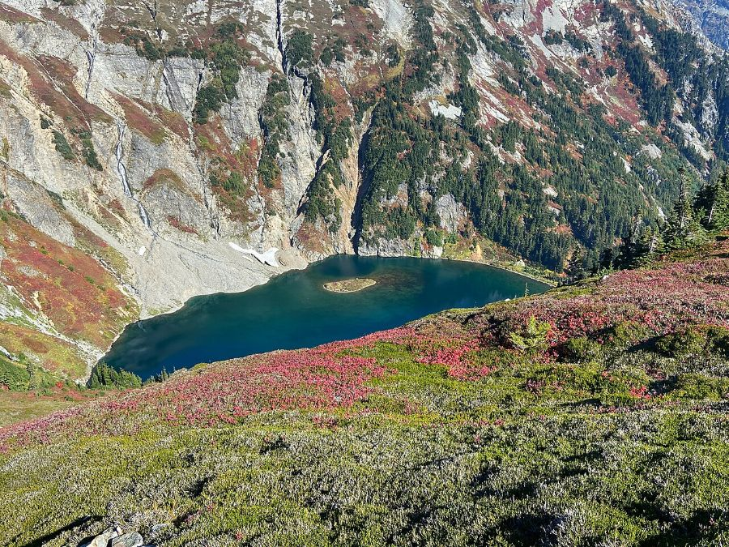
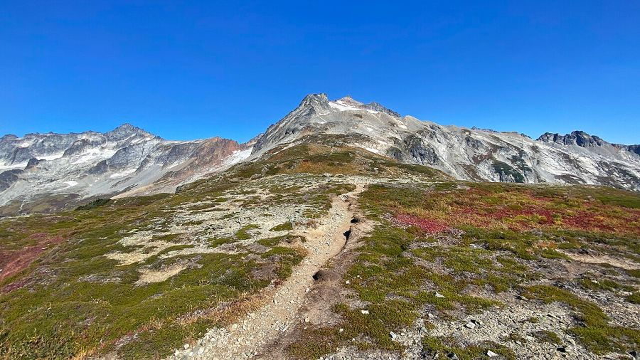
In autumn the meadows of Sahale Arm turn red and gold, with the trail winding across them toward the peaks.
Photo: Jeffhollett · CC BY-SA 4.0 · Wikimedia Commons
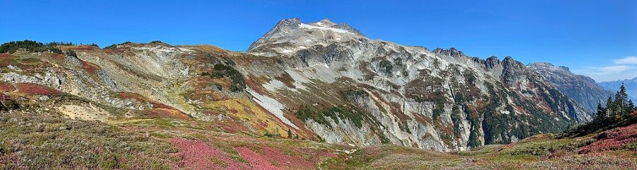
Higher up the meadows give way to bare rock, with snow patches clinging to the ridges.
Photo: Jeff Hollett from Vancouver, WA, USA · Public domain · Wikimedia Commons
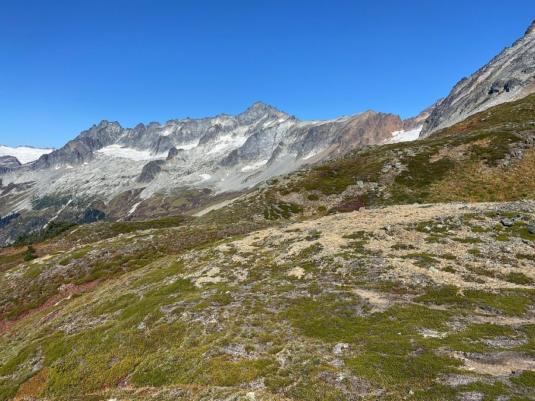
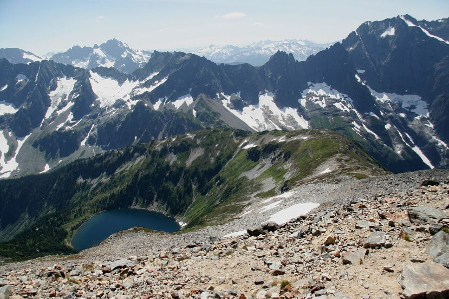
Near the top the rocky ground falls away to Doubtful Lake, far below.
Photo: brewbooks · CC BY-SA 2.0 · Wikimedia Commons
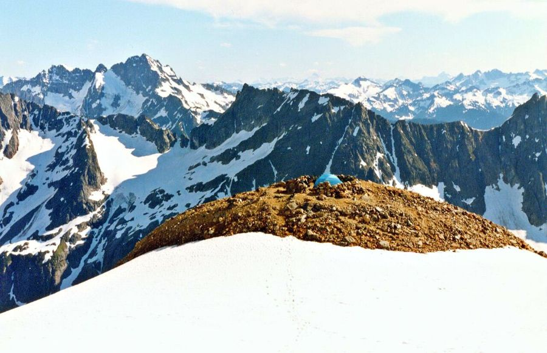
You are about above the trailhead, at the end of the trail by Sahale Glacier, 5.9 miles from the start by NPS. The photo shows the moraine beside the glacier.
Photo: Ron Clausen (uploader; photographer not named) · CC BY-SA 4.0 · Wikimedia Commons